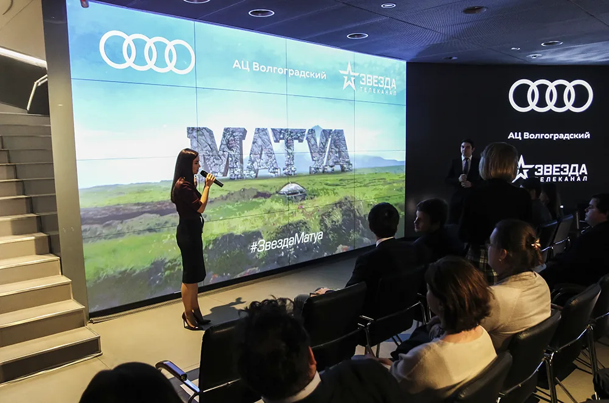
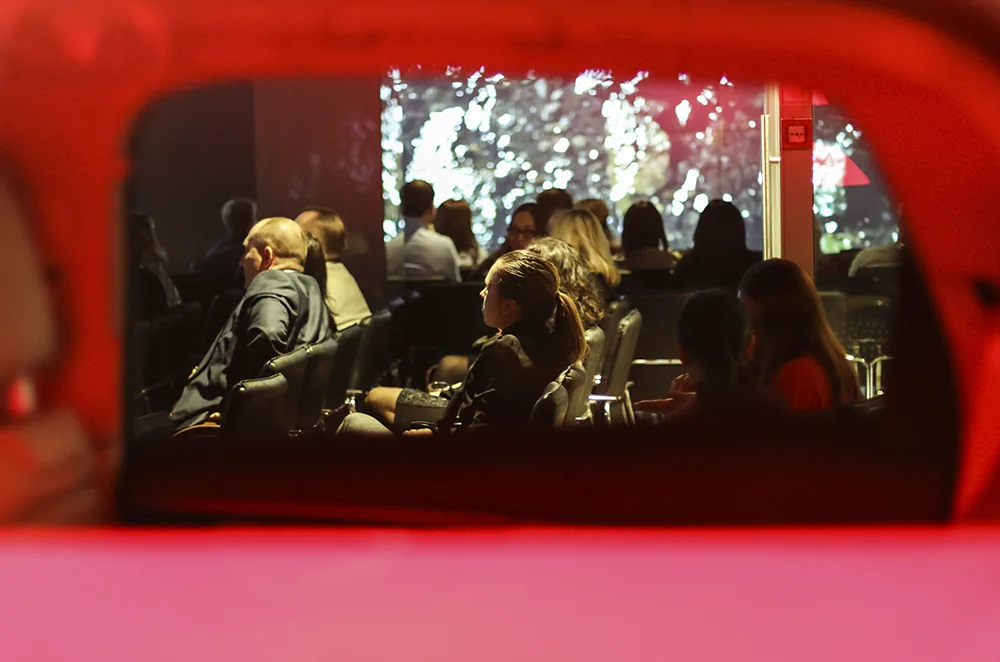
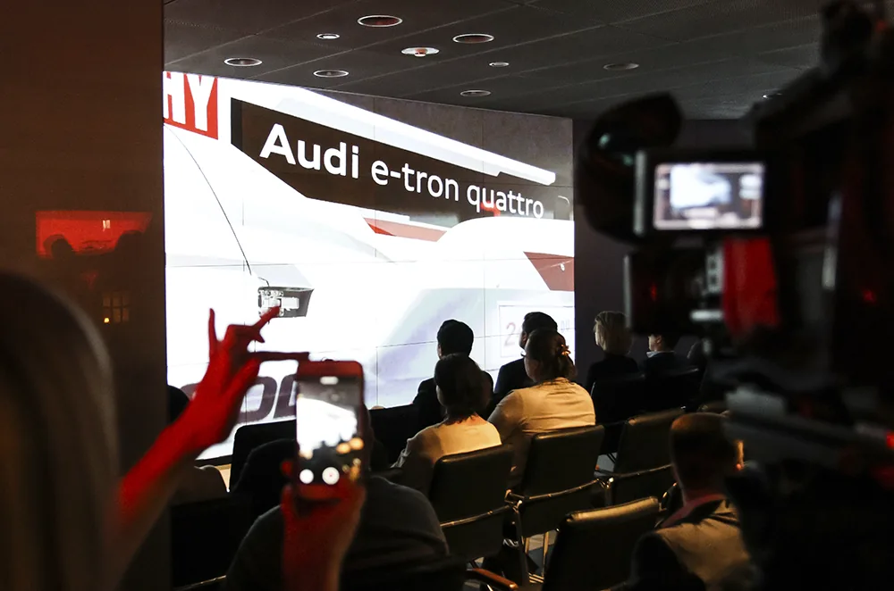
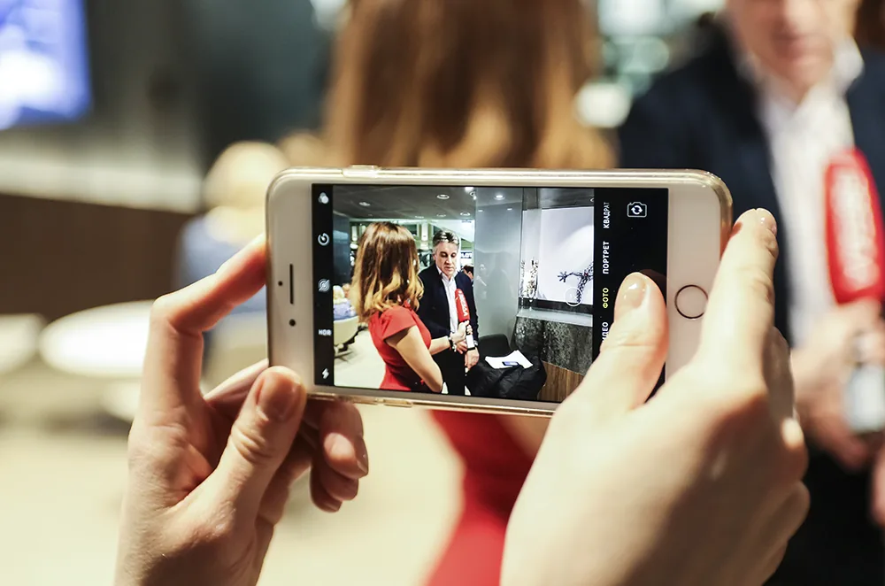
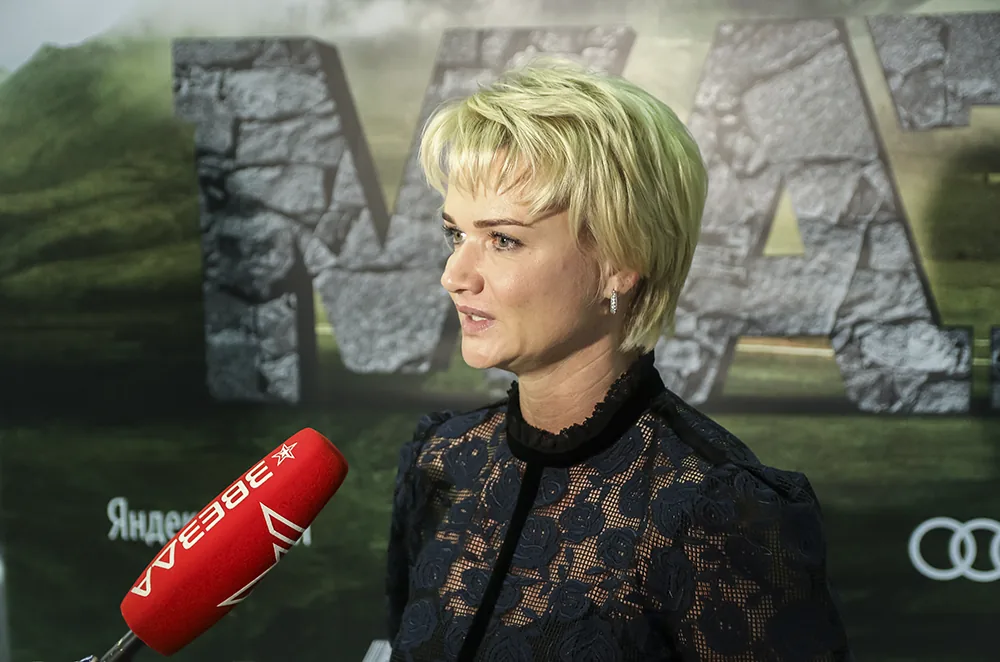
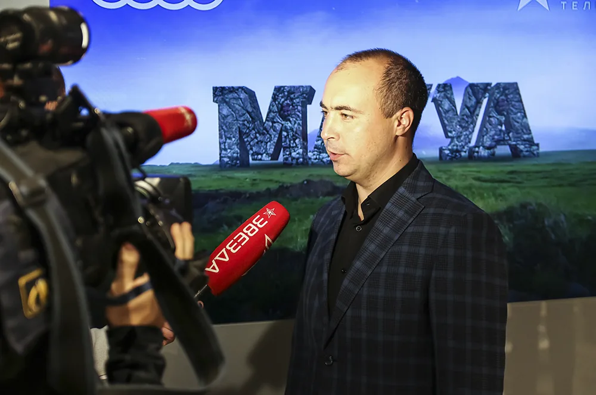
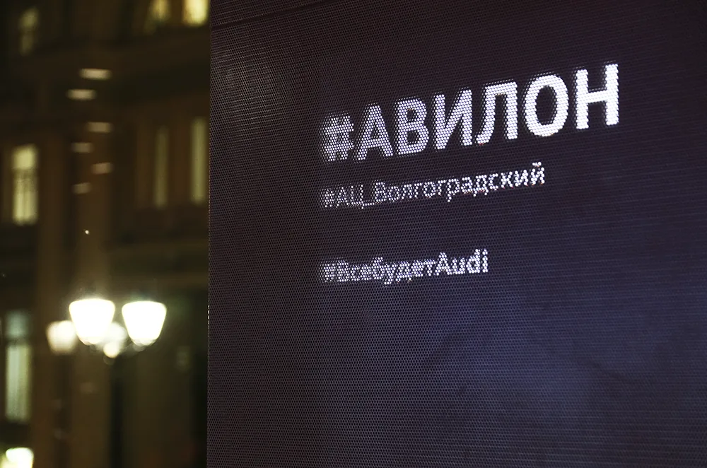

Кинопоказ / Audi City Moscow
Audi City.
Вечер большого кино.
Кинопоказ в Audi City Moscow: камерный зал, гости и разговоры о кино в пространстве автомобильного бренда.
Другой повод
для встречи.
На один вечер Audi City Moscow стал площадкой кинопоказа. Экран и зрительный зал изменили привычный сценарий пространства: гости пришли за общей историей и впечатлением от фильма.
Фотоистория сохраняет разные стороны вечера — встречу гостей, общение с прессой и сам показ. Автомобильный бренд присутствует в контексте культурного события, рядом с интересами своей аудитории.
Когда зал
становится ближе.
Свет экрана, небольшая дистанция между зрителями и сцена без лишнего пафоса. Такой формат оставляет место и самому фильму, и живому общению вокруг него.

До сеанса.
Вокруг большого экрана.





СЛЕДУЮЩИЙ ПРОЕКТ